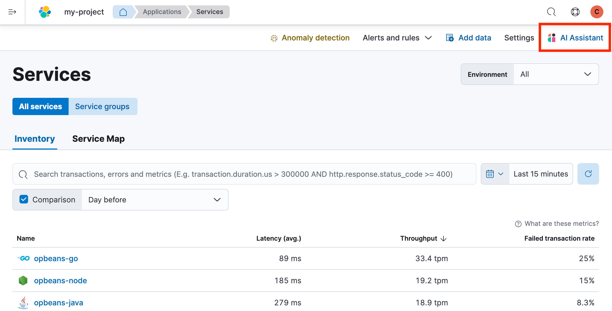
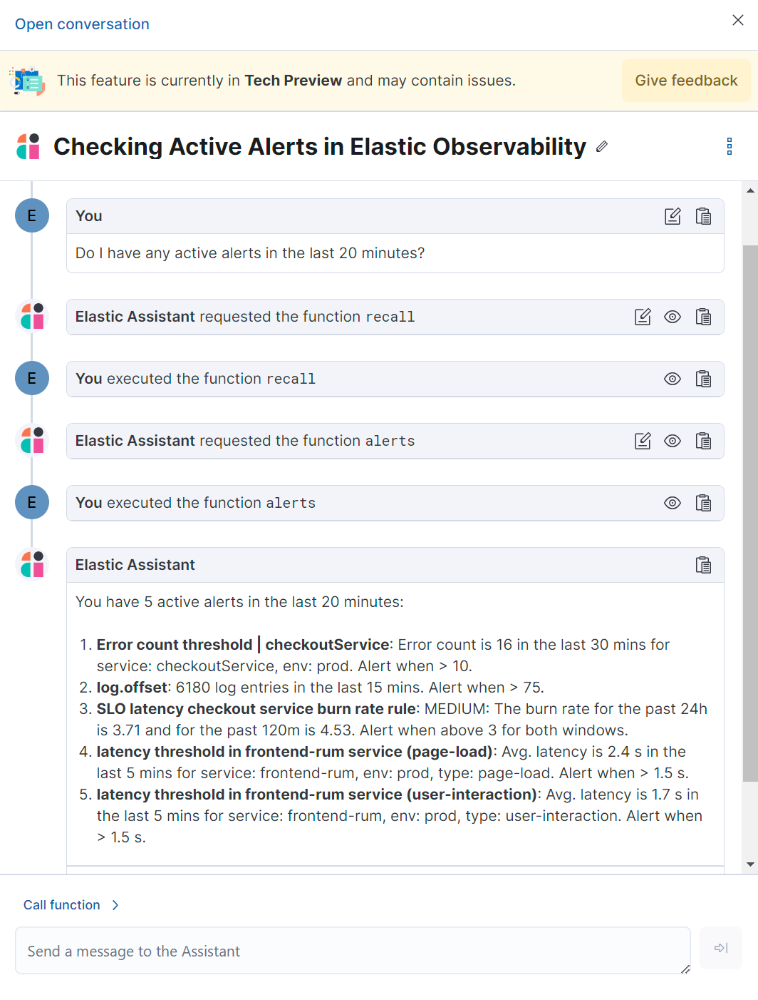
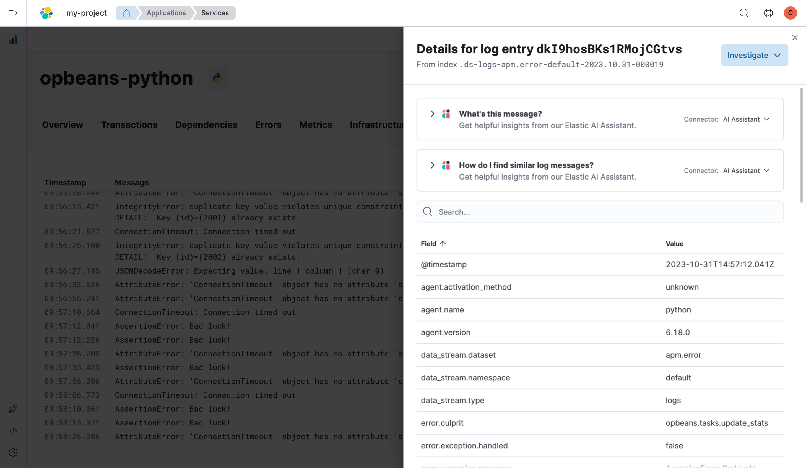
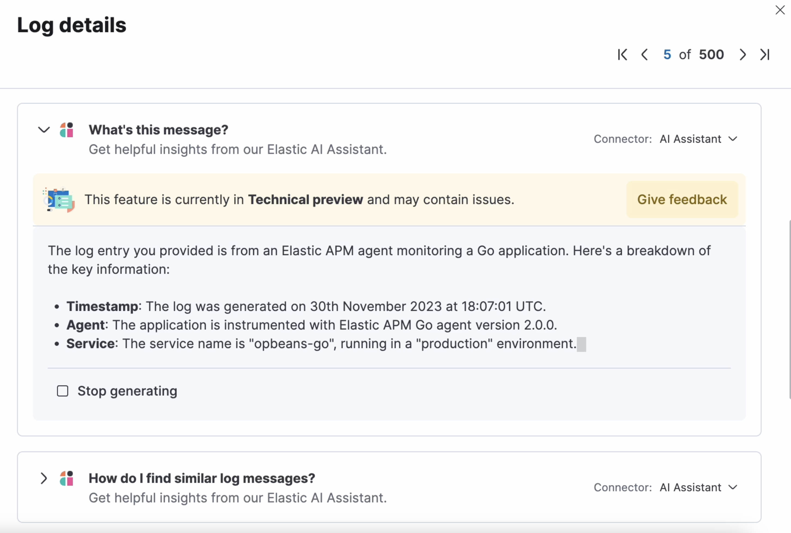
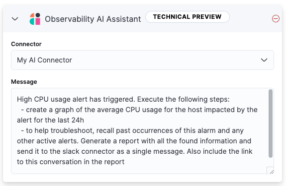
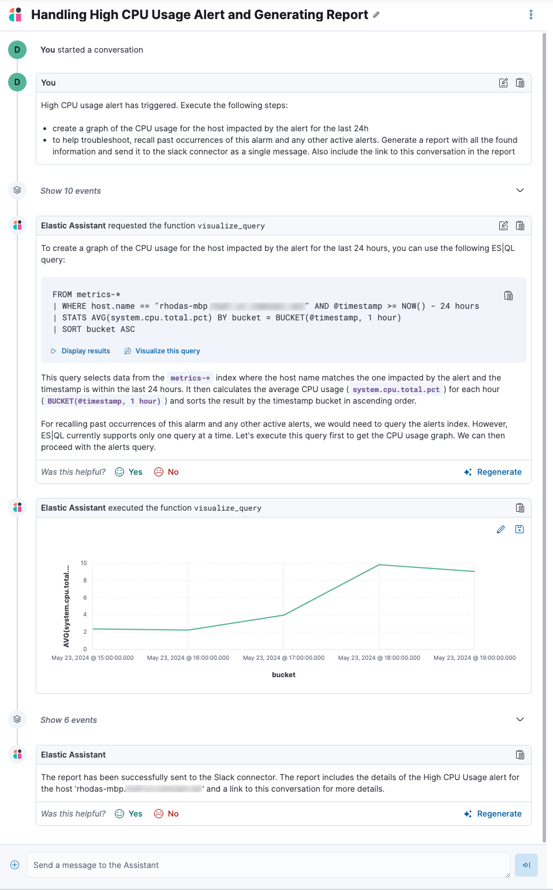
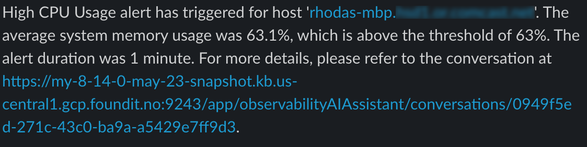

AI Assistant¶
The AI Assistant uses generative AI to provide:
Chat: Have conversations with the AI Assistant. Chat uses function calling to request, analyze, and visualize your data.
Contextual insights: Open prompts throughout Observability that explain errors and messages and suggest remediation.

The AI Assistant integrates with your large language model (LLM) provider through our supported Elastic connectors:
OpenAI connector/openai-action-type.html) for OpenAI or Azure OpenAI Service.
Amazon Bedrock connector/bedrock-action-type.html) for Amazon Bedrock, specifically for the Claude models.
Requirements¶
The AI assistant requires the following:
An account with a third-party generative AI provider that supports function calling. The Observability AI Assistant supports the following providers:
OpenAI
gpt-4+.Azure OpenAI Service
gpt-4(0613) orgpt-4-32k(0613) with API version2023-07-01-previewor more recent.AWS Bedrock, specifically the Anthropic Claude models.
The knowledge base requires a 4 GB PRODUCT_NAME node.
Your data and the AI Assistant¶
Elastic does not use customer data for model training. This includes anything you send the model, such as alert or event data, detection rule configurations, queries, and prompts. However, any data you provide to the AI Assistant will be processed by the third-party provider you chose when setting up the OpenAI connector as part of the assistant setup.
Elastic does not control third-party tools, and assumes no responsibility or liability for their content, operation, or use, nor for any loss or damage that may arise from your using such tools. Please exercise caution when using AI tools with personal, sensitive, or confidential information. Any data you submit may be used by the provider for AI training or other purposes. There is no guarantee that the provider will keep any information you provide secure or confidential. You should familiarize yourself with the privacy practices and terms of use of any generative AI tools prior to use.
Set up the AI Assistant¶
To set up the AI Assistant:
Create an authentication key with your AI provider to authenticate requests from the AI Assistant. You’ll use this in the next step. Refer to your provider’s documentation for information about creating authentication keys:
From Project settings → Management → Connectors, create an OpenAI/openai-action-type.html) or Amazon Bedrock/bedrock-action-type.html) connector.
Authenticate communication between Observability and the AI provider by providing the following information:
In the URL field, enter the AI provider’s API endpoint URL.
Under Authentication, enter the API key or access key/secret you created in the previous step.
Add data to the AI Assistant knowledge base¶
Clear all old knowledge base articles manually and reindex them.
Upgrade all knowledge base articles indexed with ELSER v1 to ELSER v2 using a Python script.
The AI Assistant uses ELSER/ml-nlp-elser.html), Elastic’s semantic search engine, to recall data from its internal knowledge base index to create retrieval augmented generation (RAG) responses. Adding data such as Runbooks, GitHub issues, internal documentation, and Slack messages to the knowledge base gives the AI Assistant context to provide more specific assistance.
You can add information to the knowledge base by asking the AI Assistant to remember something while chatting (for example, “remember this for next time”). The assistant will create a summary of the information and add it to the knowledge base.
You can also add external data to the knowledge base either in the Project Settings UI or using the PRODUCT_NAME Index API.
Use the UI¶
To add external data to the knowledge base in the Project Settings UI:
Go to Project Settings.
In the Other section, click AI assistant for Observability settings.
Then select the Elastic AI Assistant for Observability.
Switch to the Knowledge base tab.
Click the New entry button, and choose either:
Single entry: Write content for a single entry in the UI.
Bulk import: Upload a newline delimited JSON (
ndjson) file containing a list of entries to add to the knowledge base. Each object should conform to the following format:{ "id": "a_unique_human_readable_id", "text": "Contents of item", }
Use the PRODUCT_NAME Index API¶
Ingest external data (GitHub issues, Markdown files, Jira tickets, text files, etc.) into PRODUCT_NAME using the PRODUCT_NAME Index API/docs-index_.html).
Reindex your data into the AI Assistant’s knowledge base index by completing the following query in Developer Tools → Console. Update the following fields before reindexing:
InternalDocsIndex: Name of the index where your internal documents are stored.text_field: Name of the field containing your internal documents’ text.timestamp: Name of the timestamp field in your internal documents.public: Iftrue, the document is available to all users with access to your Observability project. Iffalse, the document is restricted to the user indicated in the followinguser.namefield.user.name(optional): If defined, restricts the internal document’s availability to a specific user.You can add a query filter to index specific documents.
POST _reindex
{
"source": {
"index": "<InternalDocsIndex>",
"_source": [
"<text_field>",
"<timestamp>",
"namespace",
"is_correction",
"public",
"confidence"
]
},
"dest": {
"index": ".kibana-observability-ai-assistant-kb-000001",
"pipeline": ".kibana-observability-ai-assistant-kb-ingest-pipeline"
},
"script": {
"inline": "ctx._source.text = ctx._source.remove(\"<text_field>\");ctx._source.namespace=\"<space>\";ctx._source.is_correction=false;ctx._source.public=<public>;ctx._source.confidence=\"high\";ctx._source['@timestamp'] = ctx._source.remove(\"<timestamp>\");ctx._source['user.name'] = \"<user.name>\""
}
}
Interact with the AI Assistant¶
You can chat with the AI Assistant or interact with contextual insights located throughout Observability. See the following sections for more on interacting with the AI Assistant.
Chat with the assistant¶
Click AI Assistant in the upper-right corner where available to start the chat:

This opens the AI Assistant flyout, where you can ask the assistant questions about your instance:

Suggest functions¶
The AI Assistant uses several functions to include relevant context in the chat conversation through text, data, and visual components. Both you and the AI Assistant can suggest functions. You can also edit the AI Assistant’s function suggestions and inspect function responses. For example, you could use the kibana function to call a PRODUCT_NAME API on your behalf.
You can suggest the following functions:
<DocTable columns={[{ title: “Function”, “width”: “30%” }, { title: “Description”, “width”: “70%” }]}>
alertselasticsearchkibanasummarizevisualize_query
Additional functions are available when your cluster has APM data:
<DocTable columns={[{ title: “Function”, “width”: “30%” }, { title: “Description”, “width”: “70%” }]}>
get_apm_correlationserror.message, service.node.name, or transaction.name) are contributing to, for instance, a higher latency. Another option is a time-based comparison, where you compare before and after a change point.get_apm_downstream_dependenciesspan.destination.service.resource and service.name. Use this to drill down further if needed.get_apm_error_documentget_apm_service_summaryget_apm_services_listget_apm_timeseries
Use contextual prompts¶
AI Assistant contextual prompts throughout Observability provide the following information:
Alerts: Provides possible causes and remediation suggestions for log rate changes.
Application performance monitoring (APM): Explains APM errors and provides remediation suggestions.
Logs: Explains log messages and generates search patterns to find similar issues.
For example, in the log details, you’ll see prompts for What’s this message? and How do I find similar log messages?:

Clicking a prompt generates a message specific to that log entry. You can continue a conversation from a contextual prompt by clicking Start chat to open the AI Assistant chat.

Add the AI Assistant connector to alerting workflows¶
You can use the Observability AI Assistant connector to add AI-generated insights and custom actions to your alerting workflows. To do this:
and specify the conditions that must be met for the alert to fire. Under Actions, select the Observability AI Assistant connector type.
In the Connector list, select the AI connector you created when you set up the assistant.
In the Message field, specify the message to send to the assistant:

You can ask the assistant to generate a report of the alert that fired, recall any information or potential resolutions of past occurrences stored in the knowledge base, provide troubleshooting guidance and resolution steps, and also include other active alerts that may be related. As a last step, you can ask the assistant to trigger an action, such as sending the report (or any other message) to a Slack webhook.
When the alert fires, contextual details about the event—such as when the alert fired, the service or host impacted, and the threshold breached—are sent to the AI Assistant, along with the message provided during configuration. The AI Assistant runs the tasks requested in the message and creates a conversation you can use to chat with the assistant:

It might take a minute or two for the AI Assistant to process the message and create the conversation.
Note that overly broad prompts may result in the request exceeding token limits.
For more information, refer to
When asked to send a message to another connector, such as Slack, the AI Assistant attempts to include a link to the generated conversation.

The Observability AI Assistant connector is called when the alert fires and when it recovers.
To learn more about alerting, actions, and connectors, refer to
Known issues¶
Token limits¶
Most LLMs have a set number of tokens they can manage in single a conversation. When you reach the token limit, the LLM will throw an error, and Elastic will display a “Token limit reached” error. The exact number of tokens that the LLM can support depends on the LLM provider and model you’re using. If you are using an OpenAI connector, you can monitor token usage in OpenAI Token Usage dashboard. For more information, refer to the OpenAI Connector documentation/openai-action-type.html#openai-connector-token-dashboard).